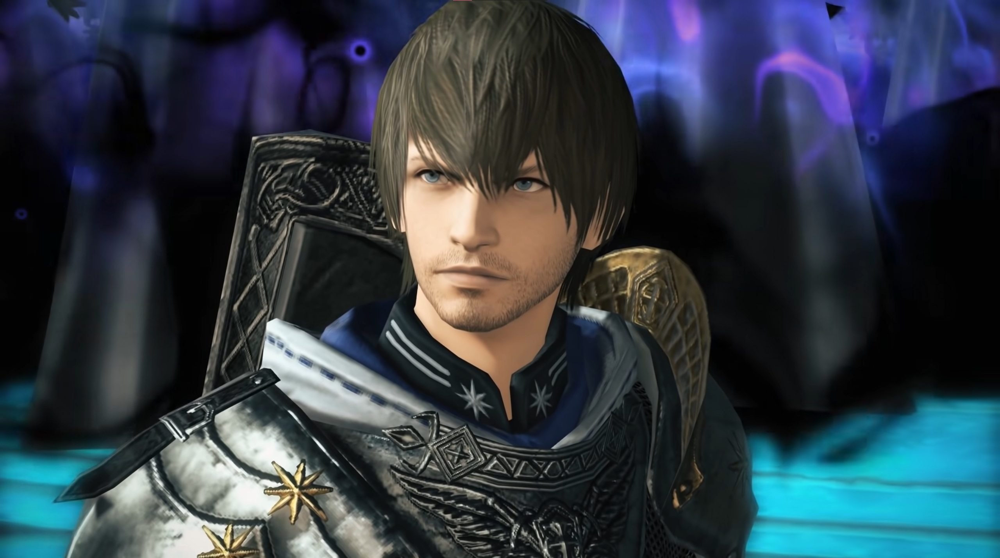
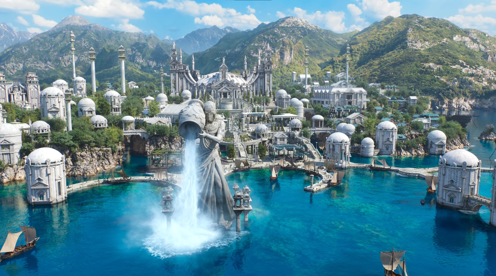
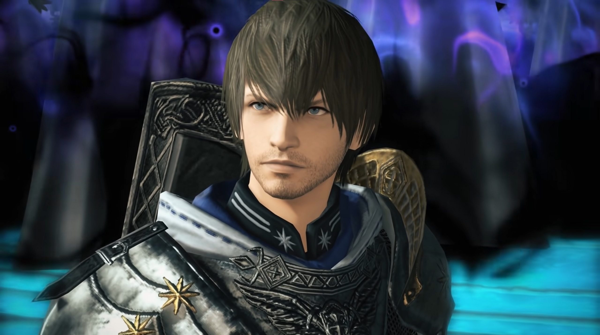
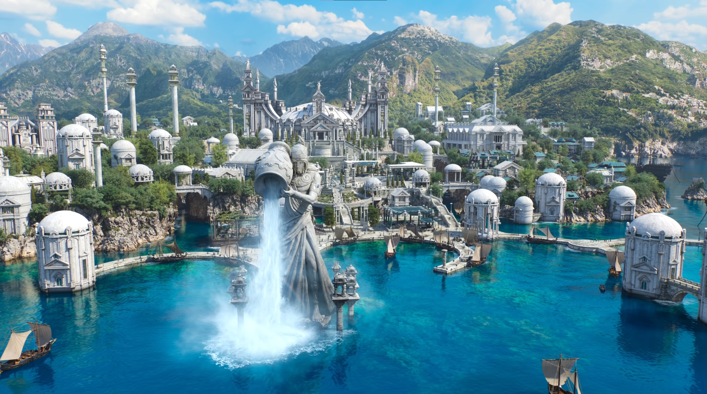

Publishing Info
- Published by: Square Enix Co., Ltd
- Developed by: Square Enix Co., Ltd
- Released: December 7. 2021
Description
In the latest expansion of the critically acclaimed MMORPG Final Fantasy 14, witness the end of a saga stretching over
10 years as the Warrior of Light. Explore the scholarly, secretive city of Old Sharlyan and the vibrant lands of Thavanir.
Reach new heights of power, including access to the new battle jobs Reaper and Sage. Together with your friends and comrades,
prevail over foes old and new in this long-awaited conclusion to this tale of the Star.
Categories
- Genre: MMORPG
- Players: Varies on content
- ESRB Rating: T
- Metacritic Metascore: 92 (universal acclaim)
Endwalker pulls off a spectacular ending to a complicated ongoing narrative, a testament to how far it has come since its revival in A Realm Reborn.
--John Carson, GameInformer
Images
 
;

;